Bug fixed in presentation: old soft24 pages paired each resurrected ID with a KEEP partner (often NOT its twin). Here each group shows KEEP + all former DROPs that pointed at it — decide twins inside the group.
Example: G? multi_C45 contains 68a + 8b126 (twins of each other) and b426 (not twin of 68a).
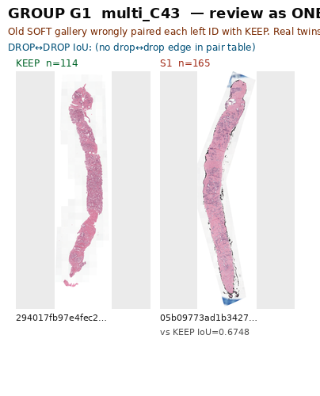
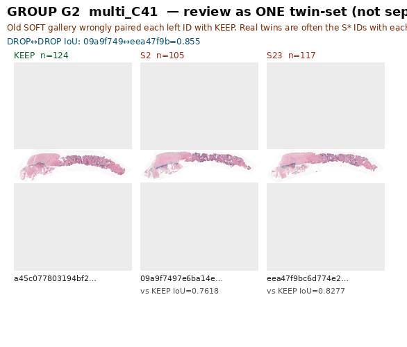
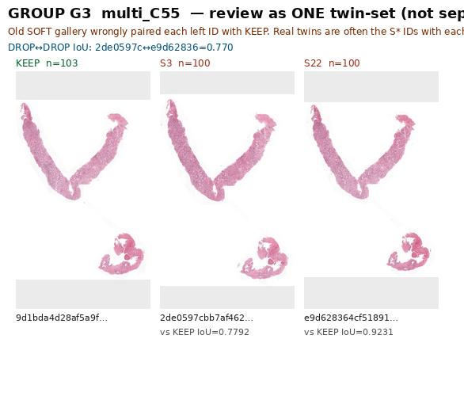
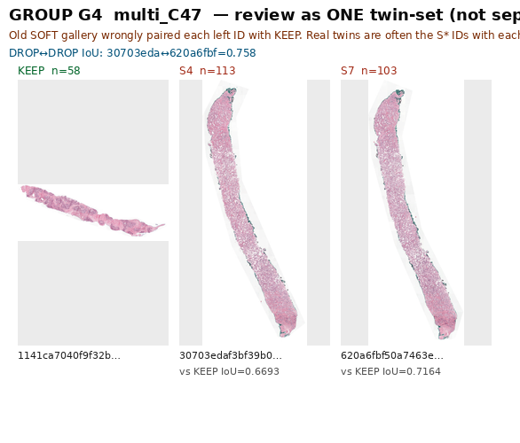
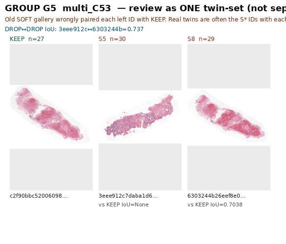
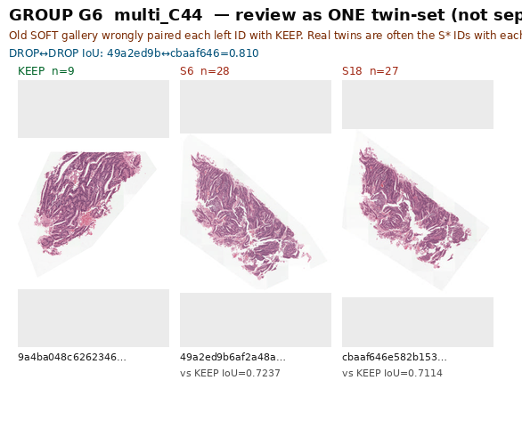
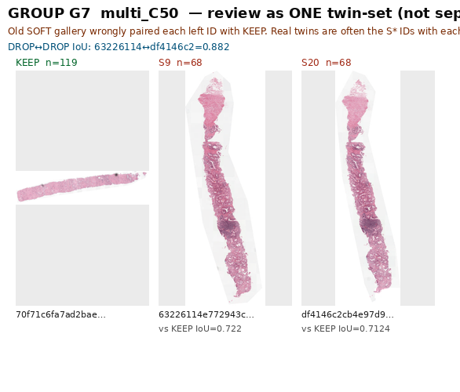
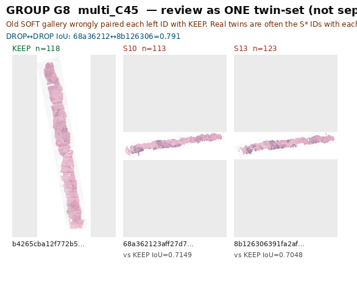
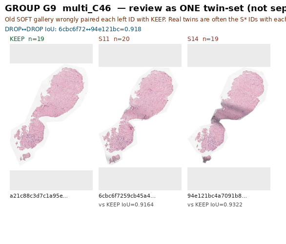
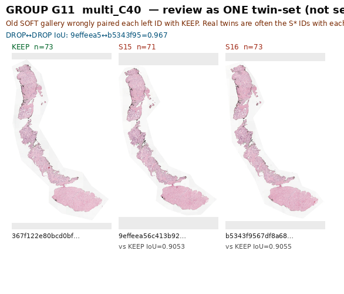
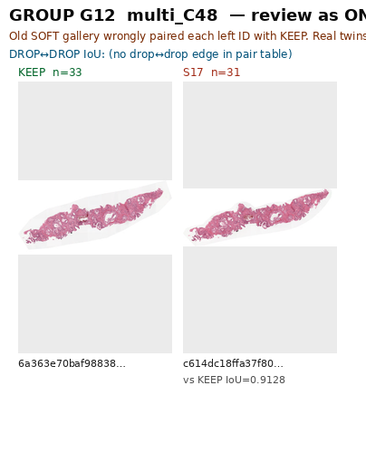